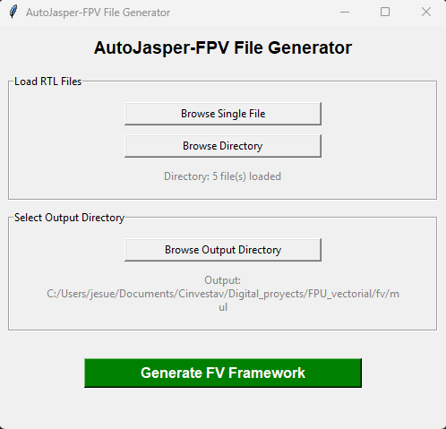

Installation Guide
AutoJasper-FPV is designed for simplicity and minimal dependencies. This guide covers system requirements, installation steps, and platform-specific considerations.
System Requirements
Mandatory Requirements
| Requirement | Minimum Version | Notes |
|---|---|---|
| Python | 3.9 or later | Required for all modes |
| Operating System | Windows, macOS, Linux | Verified on all major platforms |
Optional Requirements
| Component | Purpose | Required For |
|---|---|---|
| Tkinter | GUI framework | GUI mode only (not CLI) |
| JasperGold | JasperGold license | Running formal verification (not for framework generation) |
Python Version Check
Before installation, verify your Python version:
python --version
Expected output:
Python 3.9.x or later
If you have multiple Python installations, you may need to use:
python3 --version
Installing Python
If you don't have Python 3.9 or later:
- Windows: Download from python.org
- macOS: Use Homebrew:
brew install python@3.9 - Linux: Use your package manager:
- Ubuntu/Debian:
sudo apt install python3.9 - Fedora:
sudo dnf install python3.9
Installation Steps
1. Clone or Download the Repository
Using Git:
git clone https://github.com/your-repo/AutoJasper-FPV.git
cd AutoJasper-FPV
Or manually download and extract the project files.
2. Install Dependencies
Although AutoJasper-FPV uses only Python Standard Library modules, a requirements.txt file is provided for reference:
pip install -r requirements.txt
This command will ensure any development or optional dependencies are installed (currently none, but may be added in future versions).
3. Verify Installation
Test that AutoJasper-FPV runs correctly:
GUI mode:
python autojasper_fpv.py
A window should open with the AutoJasper-FPV interface.
CLI mode:
python autojasper_fpv.py --help
You should see the command-line help output.
Platform-Specific Setup
Windows
Prerequisites
- Windows 10 or later recommended
- Python from python.org (include pip during installation)
GUI Mode Setup
Tkinter is included with Python on Windows by default. If not present, reinstall Python and ensure "tcl/tk and IDLE" is selected during installation.
PowerShell Users
If executing Python scripts is disabled, enable it:
Set-ExecutionPolicy -ExecutionPolicy RemoteSigned -Scope CurrentUser
Running from Command Prompt
cd path\to\AutoJasper-FPV
python autojasper_fpv.py
macOS
Prerequisites
- macOS 10.14 or later
- Python 3.9+ (via Homebrew recommended)
Installation via Homebrew
brew install python@3.9
GUI Mode Setup
On macOS, Tkinter may need to be installed separately:
brew install python-tk@3.9
Running the Tool
cd /path/to/AutoJasper-FPV
python autojasper_fpv.py
Linux
Prerequisites
- Supported distributions: Ubuntu 20.04+, Fedora 33+, Debian 11+, or similar
- Python 3.9+ development headers
Installing Dependencies
Ubuntu/Debian:
sudo apt update
sudo apt install python3.9 python3-pip python3-tk
Fedora/RHEL:
sudo dnf install python3.9 pip python3-tkinter
Arch Linux:
sudo pacman -S python tk
Running the Tool
cd /path/to/AutoJasper-FPV
python3.9 autojasper_fpv.py
Headless/Remote Server (CLI Only)
If running on a headless Linux server without a display:
- GUI mode will not work (no display server)
- Use CLI mode exclusively:
python3.9 autojasper_fpv.py -d ./rtl -o ./formal
Virtual Environments (Recommended)
Using a Python virtual environment isolates AutoJasper-FPV dependencies and prevents conflicts with other projects.
Creating a Virtual Environment
On Windows
python -m venv venv
venv\Scripts\activate
On macOS/Linux
python3.9 -m venv venv
source venv/bin/activate
Activating the Environment
Each time you work with AutoJasper-FPV, activate the environment:
# Windows
venv\Scripts\activate
# macOS/Linux
source venv/bin/activate
Your terminal prompt should now show (venv) at the beginning.
Installing in the Virtual Environment
pip install -r requirements.txt
python autojasper_fpv.py
Deactivating the Environment
When finished:
deactivate
Verifying the Installation
Test 1: CLI Help Output
python autojasper_fpv.py --help
Expected: Displays usage information and available options.
Test 2: GUI Launch
python autojasper_fpv.py
Expected: GUI window opens without errors.

Test 3: Simple Framework Generation
Generate a framework for a test RTL file:
# Create a simple test design
echo "module test_module(input clk, output reg valid); endmodule" > test.sv
# Generate framework
python autojasper_fpv.py -f test.sv -o ./test_output
Expected: Directory test_output is created with generated artifacts:
- fv_test_module.sv
- analyze.flist
- jg_fpv.tcl
- Makefile
Troubleshooting Installation
"Python not found" Error
Solution: Ensure Python is installed and in your system PATH. Try:
python --version
# or
python3 --version
"No module named tkinter" (GUI Mode)
Windows: Reinstall Python; ensure "tcl/tk and IDLE" is selected.
macOS: Install via Homebrew:
brew install python-tk
Linux (Ubuntu/Debian):
sudo apt install python3-tk
Permission Denied (Linux/macOS)
Make the script executable:
chmod +x autojasper_fpv.py
./autojasper_fpv.py
ModuleNotFoundError for Standard Library
This should not occur with Python 3.9+. If it does, verify your Python installation:
python -m ensurepip --upgrade
Next Steps
After successful installation:
- Read the System Overview — Understand CLI and GUI modes
- Check out Generated Artifacts — Learn what gets created
- Run your first generation — Use the quick start below
Quick Start
CLI (Automated):
python autojasper_fpv.py -d ./your_rtl_directory -o ./formal_output
GUI (Interactive):
python autojasper_fpv.py
Getting Help
If you encounter issues:
- Check Python version — Must be 3.9 or later
- Review platform-specific section above for your OS
- Verify Tkinter if using GUI mode
- Try a clean virtual environment to isolate the issue
- Report issues with detailed error messages and system information
System Compatibility Matrix
| OS | Python 3.9 | Python 3.10+ | GUI | CLI | Status |
|---|---|---|---|---|---|
| Windows 10/11 | ✓ | ✓ | ✓ | ✓ | Verified |
| macOS 11+ | ✓ | ✓ | ✓ | ✓ | Verified |
| Ubuntu 20.04+ | ✓ | ✓ | ✓ | ✓ | Verified |
| Fedora 33+ | ✓ | ✓ | ✓ | ✓ | Verified |
| CentOS 8 | ✓ | ✓ | ✓ | ✓ | Verified |
| Alpine Linux | ✓ | ✓ | ✓ | ✓ | Verified |
✓ = Supported and tested